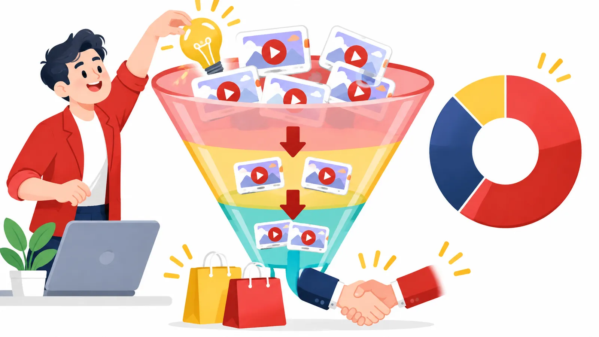

02Buổi 2 trên 8
Chiến lược nội dung: nên đăng những gì
Phân bổ video theo phễu và mức độ nhận thức, chọn ý tưởng theo tỷ lệ 70-20-10 và làm đủ video cuối phễu để kênh ra doanh thu.
Mục tiêu buổi học
- Phân bổ nội dung theo ba tầng phễu (đầu, giữa, cuối) và nhận ra hai sai lầm phân bổ phổ biến.
- Sản xuất năm dạng video cuối phễu tác động trực tiếp tới quyết định mua.
- Xác định mức độ nhận thức của người xem trước khi viết kịch bản cho từng video.
- Tổ chức nguồn ý tưởng với nhà sáng lập làm trung tâm và chọn ý tưởng theo quy tắc 70-20-10.
Tóm tắt 30 giây
Khi YouTube "không hiệu quả", vấn đề thường nằm ở cách phân bổ nội dung chứ không phải ở nền tảng. Một kênh bán được hàng cần đủ video đầu, giữa và cuối phễu, mỗi video nhắm đúng một mức độ nhận thức của người xem. Ý tưởng nên chủ yếu đến từ nhà sáng lập, được chọn theo tỷ lệ 70-20-10, và những định dạng đang chạy tốt cần được giữ lại thay vì đổi vì chán. Khi một video bất ngờ viral, hãy nối ngay bằng video giữa hoặc cuối phễu.

1. YouTube vẫn hiệu quả, vấn đề nằm ở cách xây nội dung
Khi một nhà sáng lập nói YouTube không hiệu quả, câu trả lời thường là: YouTube vẫn hoạt động rất tốt và đang mang lại kết quả cho rất nhiều doanh nghiệp khác. Vấn đề thường nằm ở cách họ phân bổ nội dung.
Hãy hình dung phễu bán hàng như cái phễu rót nước: miệng rộng phía trên đón nhiều người mới (đầu phễu, Top of Funnel), phần giữa giúp họ hiểu bạn, phần dưới hẹp là nơi họ quyết định mua (cuối phễu, Bottom of Funnel). Có hai sai lầm phổ biến:
| Sai lầm | Biểu hiện | Hậu quả |
|---|---|---|
| Chỉ làm nội dung đầu phễu | Kênh nhiều lượt xem, thu hút nhiều người mới | Gần như không tạo ra chuyển đổi |
| Chỉ làm nội dung cuối phễu | Nội dung tập trung vào sản phẩm, dịch vụ, bán hàng | Không ai biết đến kênh để xem những video đó |
Tỷ lệ phân bổ thường dùng:
- 60% nội dung đầu phễu: thu hút người mới.
- 30% nội dung giữa phễu: giúp khách hàng hiểu cách bạn tư duy và giải quyết vấn đề.
- 10% nội dung cuối phễu: giúp khách hàng ra quyết định mua hàng.
Lưu ýTỷ lệ 60-30-10 chỉ để tham khảo, không phải công thức cố định cho mọi doanh nghiệp.
2. Năm dạng video cuối phễu mà hầu hết các kênh đang bỏ qua
Đây là những nội dung có khả năng tác động trực tiếp tới quyết định mua hàng.
| Dạng | Nội dung | Gợi ý triển khai |
|---|---|---|
| 1. Case study: phân tích kết quả thực tế | Câu chuyện trước và sau khi khách hàng dùng sản phẩm hoặc dịch vụ | Doanh nghiệp đã tăng trưởng thế nào? Khách hàng đã giải quyết được vấn đề gì? Những thay đổi cụ thể sau khi áp dụng phương pháp của bạn? |
| 2. Giải đáp lý do khách hàng chưa mua | Thẳng thắn trả lời các băn khoăn phổ biến | Sản phẩm có thật sự hợp với tôi không? Tôi có đủ khả năng triển khai không? Chi phí có xứng đáng không? Nếu không đạt kết quả thì sao? |
| 3. Ai nên và không nên dùng sản phẩm | Nói rõ sản phẩm được thiết kế cho ai và không hợp với ai | Giúp khách hàng tự đánh giá mức độ phù hợp trước khi mua |
| 4. So sánh giải pháp của bạn với lựa chọn khác | Khách hàng thường có nhiều phương án | Giúp họ hiểu sự khác biệt giữa sản phẩm của bạn và các giải pháp thay thế |
| 5. Giải thích toàn bộ quy trình sau khi đăng ký | Điều gì xảy ra sau khi khách hàng thanh toán | Họ được hướng dẫn thế nào? Quy trình triển khai ra sao? Ai sẽ đồng hành cùng họ? |
Case study là bài phân tích một trường hợp cụ thể, cho thấy khách hàng đã thay đổi ra sao nhờ bạn. Riêng dạng 5, một video giải thích rõ quy trình sau khi đăng ký có thể giảm đáng kể sự do dự trước khi mua.
Ghi nhớVideo cuối phễu trả lời những câu khách hàng tự hỏi ngay trước lúc trả tiền. Kênh trả lời trước những câu này thì khách hàng bớt do dự khi ra quyết định.
3. Phân loại nội dung theo mức độ nhận thức của khách hàng
Nhiều doanh nghiệp dùng mô hình mức độ nhận thức của khách hàng trong quảng cáo, Email Marketing và bán hàng, nhưng lại quên mất nó khi làm nội dung YouTube. Mô hình này chia người xem theo việc họ đã hiểu tới đâu về vấn đề và về bạn. Có năm cấp độ:
| Cấp độ | Tên | Trạng thái khách hàng | Nội dung cần làm |
|---|---|---|---|
| 1 | Chưa nhận thức được vấn đề (Unaware) | Chưa biết mình đang gặp vấn đề | Giúp họ nhận ra một vấn đề trước đây chưa từng nghĩ tới |
| 2 | Nhận thức được vấn đề (Problem Aware) | Đã nhận ra khó khăn nhưng chưa biết cách giải quyết | Phân tích nguyên nhân, giúp họ hiểu rõ vấn đề |
| 3 | Nhận thức được giải pháp (Solution Aware) | Đã biết có giải pháp nhưng chưa biết sản phẩm của bạn | Giới thiệu các phương pháp và cách tiếp cận khác nhau |
| 4 | Nhận thức được sản phẩm (Offer Aware) | Đã biết sản phẩm hoặc dịch vụ của bạn | Giúp họ hiểu rõ lợi ích, sự khác biệt và giá trị nhận được |
| 5 | Sẵn sàng mua hàng (Most Aware) | Đã hiểu rõ sản phẩm, gần như sẵn sàng quyết định | Giải quyết băn khoăn cuối cùng và thúc đẩy hành động |
Trước khi viết kịch bản, đội ngũ cần trả lời được một câu: "Video này dành cho nhóm khách hàng đang ở cấp độ nhận thức nào và chúng ta muốn giúp họ tiến thêm một bước ra sao?"
Ví dụ"Video này dành cho những người đã nhận ra vấn đề nhưng chưa biết cách giải quyết. Vì vậy, chúng ta sẽ phân tích các giải pháp hiện có." Người xem đang ở cấp độ 2, video đưa họ bước sang cấp độ 3.
4. Áp dụng quy tắc 70-20-10 để chọn ý tưởng
Đây là nguyên tắc được Google đề cập, dùng để phân bổ ý tưởng nội dung:
- 70%: những nội dung đã chứng minh được hiệu quả.
- 20%: ý tưởng mới nhưng có liên quan tới các nội dung đang chạy tốt.
- 10%: thử nghiệm hoàn toàn mới.
Phần 10% là chỗ bạn thử các định dạng và ý tưởng khác biệt. Tỷ lệ này khác với tỷ lệ 60-30-10 ở mục 1: 60-30-10 chia video theo tầng phễu, còn 70-20-10 chia ý tưởng theo mức độ đã được kiểm chứng.
Lưu ýNhiều kênh mắc sai lầm khi liên tục chạy theo ý tưởng mới. Họ đổi định dạng quá thường xuyên, khiến đội ngũ không đủ thời gian tối ưu những gì đang chạy tốt.
5. Nhà sáng lập phải là nguồn ý tưởng chính
Khi doanh nghiệp bắt đầu hệ thống hóa hoạt động YouTube, một sai lầm hay gặp là nhà sáng lập rút hẳn khỏi khâu nghĩ ý tưởng. Thương hiệu từ đó dần mất tiếng nói riêng. Khách hàng không chỉ mua sản phẩm, họ còn mua con người, quan điểm và cách tư duy của bạn. Vì vậy, nhà sáng lập vẫn phải là nguồn ý tưởng chính.
Bạn không cần dành hàng giờ để viết. Hãy tận dụng những gì diễn ra mỗi ngày:
- Ghi âm suy nghĩ sau một cuộc gọi bán hàng.
- Lưu lại ý tưởng trong các cuộc họp.
- Ghi chú nhanh trên điện thoại khi nảy ra một vấn đề thú vị.
- Gửi một tin nhắn cho đội Content khi có điều đáng chia sẻ.
Mỗi tuần, người phụ trách chiến lược YouTube nên tổng hợp khoảng 10 tới 20 ý tưởng và trình bày để nhà sáng lập lựa chọn.
Ghi nhớNhà sáng lập chọn ý tưởng. Đội ngũ chịu trách nhiệm biến ý tưởng thành nội dung.
6. Những định dạng đang xây dựng niềm tin rất tốt
Khi AI giúp ngày càng nhiều người làm nội dung nhanh, việc nhận ra ai thực sự đáng tin trở nên khó hơn. Vì vậy, các định dạng có bằng chứng thực tế đang có lợi thế lớn.
| Định dạng | Cách làm | Vì sao hiệu quả |
|---|---|---|
| Live Case Study: phân tích trực tiếp một trường hợp thực tế | Nhà sáng lập ngồi cùng khách hàng trong một giờ để phân tích doanh nghiệp, xây chiến lược hoặc xem các chỉ số kinh doanh | Người xem thấy chuyên gia thực sự làm việc thay vì chỉ nghe họ kể mình làm được gì, và đó cũng là giá trị khách hàng muốn mua sau này |
| Challenge Video: video thử thách | Một khách hàng thực hiện thử thách có kết quả cụ thể | Với người xem mới bắt đầu, giúp họ hình dung kết quả có thể đạt được; tạo tò mò và chứng minh khả năng ứng dụng thực tế |
Ví dụVideo thử thách: một khách hàng xây cửa hàng thương mại điện tử và kiếm được 1.000 USD đầu tiên trong vòng 24 giờ.
7. Đừng đổi định dạng chỉ vì bạn đã thấy chán
Đây là sai lầm của rất nhiều nhà sáng tạo nội dung. Bạn đã xem hàng chục video của chính mình, nên một định dạng quen thuộc dễ khiến bạn thấy nhàm. Khán giả thì không như vậy. Họ chưa xem hết video của bạn, thậm chí chưa biết bạn đang dùng một định dạng lặp lại.
Lưu ýĐừng vội bỏ một định dạng đang chạy tốt chỉ vì bản thân bạn đã thấy nó quá quen. Cảm giác chán của người làm không phải là tín hiệu từ người xem.
8. Tận dụng đà tăng trưởng của video đang viral
Khi một video đầu phễu bất ngờ đạt lượng xem lớn, đừng chỉ ngồi chờ xem nó đi tới đâu. Hãy nhanh chóng sản xuất video tiếp theo thuộc nhóm giữa phễu hoặc cuối phễu.
Lý do là video trước đã giúp nhiều người biết đến bạn. Một phần trong số họ sẽ xem tiếp video sau, nhờ đó bạn tận dụng được đà tăng trưởng để đưa họ tới gần quyết định mua hơn. Giống như khi cửa hàng bỗng đông khách: đó là lúc cần có sẵn người tư vấn, không phải lúc treo thêm biển quảng cáo.
Checklist áp dụng
Tiến độ được lưu trên trình duyệt của bạn.
Bài tập thực hành
- Kiểm tra tỷ lệ phân bổ phễu. - Đầu vào: 20 video gần nhất của kênh. - Cách làm: xếp từng video vào một trong ba nhóm đầu phễu, giữa phễu, cuối phễu, rồi tính tỷ lệ mỗi nhóm. - Đầu ra: bảng phân loại 20 video và tỷ lệ thực tế, kèm nhận xét kênh đang lệch về nhóm nào.
- Sản xuất một video cuối phễu trong tháng này. - Đầu vào: năm dạng video cuối phễu ở mục 2. - Cách làm: chọn ít nhất một dạng phù hợp với sản phẩm, viết kịch bản và sản xuất. - Đầu ra: ít nhất một video cuối phễu hoàn chỉnh được đăng trong tháng.
- Xây dựng kho ý tưởng chung. - Đầu vào: các ý tưởng nảy ra từ cuộc gọi bán hàng, cuộc họp, ghi chú hằng ngày. - Cách làm: tạo một kho lưu trữ ý tưởng mà toàn đội truy cập được, bổ sung ít nhất 3 bản ghi âm ý tưởng ngay trong tuần này. - Đầu ra: kho ý tưởng đang hoạt động với tối thiểu 3 bản ghi âm.
Câu hỏi tự kiểm tra
Hai sai lầm phổ biến khi phân bổ nội dung theo phễu là gì?
Xem gợi ý
Chỉ làm đầu phễu (nhiều lượt xem nhưng gần như không chuyển đổi) và chỉ làm cuối phễu (bán hàng nhưng không ai biết đến kênh).
Năm dạng video cuối phễu gồm những dạng nào?
Xem gợi ý
Case study, giải đáp lý do chưa mua, ai nên và không nên dùng, so sánh với lựa chọn khác, giải thích quy trình sau khi đăng ký.
Người xem ở cấp độ Solution Aware khác người xem ở cấp độ Offer Aware như thế nào?
Xem gợi ý
Solution Aware đã biết có giải pháp nhưng chưa biết sản phẩm của bạn; Offer Aware đã biết sản phẩm của bạn và cần hiểu rõ lợi ích, khác biệt, giá trị.
Quy tắc 70-20-10 chia ý tưởng như thế nào, và sai lầm nào hay gặp?
Xem gợi ý
70% đã chứng minh hiệu quả, 20% mới nhưng liên quan tới nội dung đang chạy tốt, 10% thử nghiệm mới; sai lầm là liên tục đổi định dạng nên không kịp tối ưu cái đang chạy tốt.
Nên làm gì khi một video đầu phễu bất ngờ viral?
Xem gợi ý
Nhanh chóng sản xuất video giữa hoặc cuối phễu để đưa lượng người mới biết đến bạn tới gần quyết định mua.